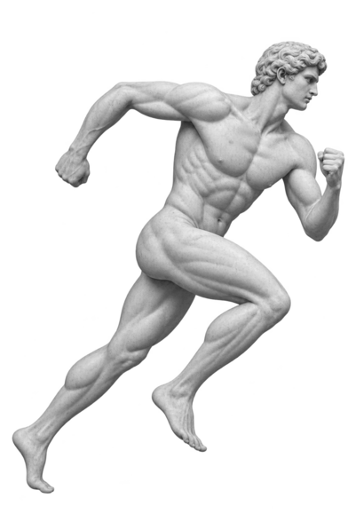

Run · Completed
Morning
run
7.24 kmDistance
42:18Duration
5:51Pace / km
Coach’s brief
A quicker run at the same effort.
You ran 11 seconds per kilometre faster than your recent average while keeping your heart rate nearly unchanged.
- Average pace
- 5:51 /km11 sec faster
- Average heart rate
- 154 bpm1 bpm lower
Compared with your six runs between 5 and 9 km from the previous four weeks.
The course
7.24 km
Riverside loop
Riverside parkNorth river
Start Finish
84 m ascent
The evidence
42:18 total
Effort
5:51 /kmaverage pace
0:0010:3521:0931:4442:18
Fastest section: 5:33 /km at 24 minutes.
Mostly typicalKilometre by kilometre
Avg 5:51
Splits
| Km | Pace | Vs average | Heart rate |
|---|---|---|---|
| 1 | 5:51 | Same as average | 148 bpm |
| 2 | 5:57 | 6 sec slower | 153 bpm |
| 3 | 5:45 | 6 sec faster | 157 bpm |
| 4 | 5:50 | 1 sec faster | 160 bpm |
| 5 | 5:58 | 7 sec slower | 156 bpm |
| 6 | 5:52 | 1 sec slower | 154 bpm |
| 7 | 5:44 | 7 sec faster | 151 bpm |
| 0.24 | 5:36 | 15 sec faster | 149 bpm |
Activity details
- Elevation gain
- 84 m
- Average heart rate
- 154 bpm
- Average cadence
- 172 spm
- Calories
- 486 kcal
- Device
- Forerunner 265
- Weather
- 14°C · Calm
Modern Palaestra study · illustrative activity data